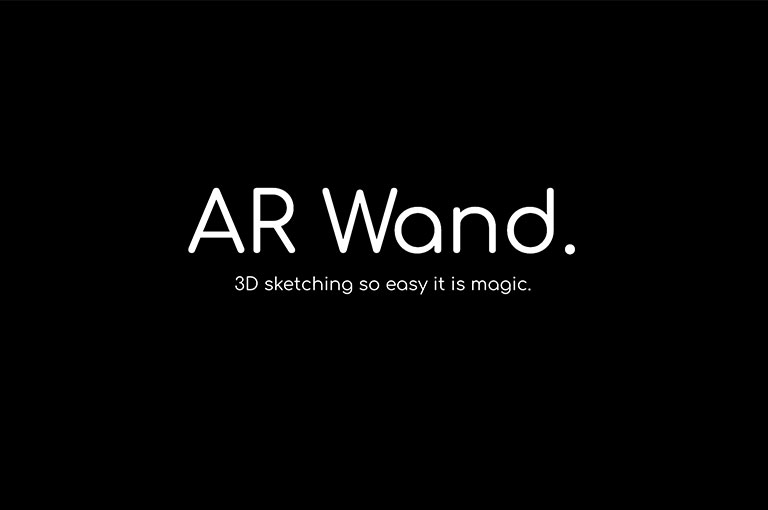
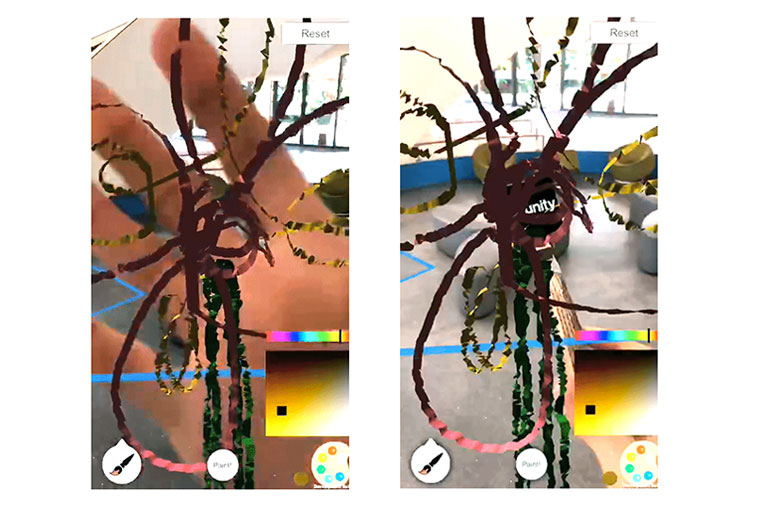
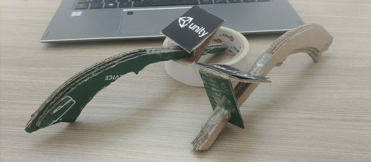
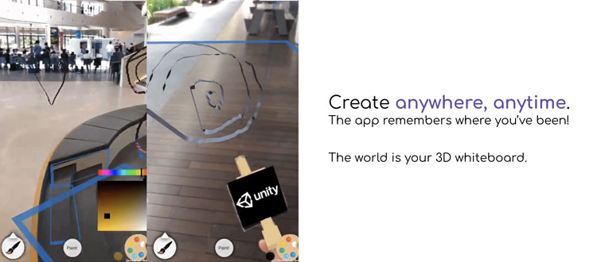
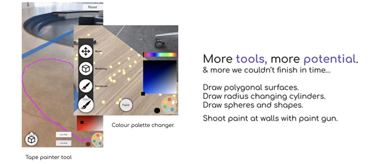
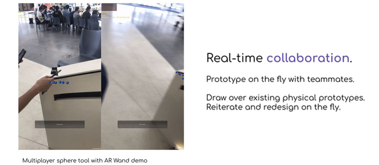

AR Wand
ARWand is created in 24 hours as part of the SUTD What The Hack x Singapore VR Hackathon 2018. For the full pitch deck, please go here: pitch deck slides
Today, Virtual Reality has unlocked the potential to create new forms of art and design, with tools like Oculus Quill and Gravity Sketch.
What about Augmented Reality?
AR, now more available through our phones, is still not used to create, but only to visualise. Yes, visualisation is a key benefit, but so is creation. So why?
It is difficult to gauge 3D space on a 2D mobile screen.
Meet the AR Wand
The AR Wand is designed to elimiate the barrier between real 3D space and the 2D screen.
Simply draw in real 3D space.
Know exactly where you draw (with object occlusion).
With a low-cost tool hence minimal barrier of adoption.
A software of limitless possibilities
Draw anytime, anywhere with relocalisation.
With multiple 'brushes' and interative design tools.
Create together with friends and strangers everywhere, through multiplayer.
How It Was Done
With only 24 hours on the clock, I knew I had to plan carefully to create a working prototype. Of course, I already had the idea in mind (& the pitch) before I decided to join the competition.
Initial Preparations (before the competition)
I downloaded all the example Unity projects that would help, and watch videos on similar Unity projects to mine. Knowing exactly what I had to create, I made sure to watch tutorials on aspects I was uncertain of.
Milestones & Roadblocks (during the competition)
Tracking an image maker with ARKit was easily achieved. Painting in 3D space using linerenderer with the image marker too, was easily done. Short few hours in, and I was 1/4 done. But then came the roadblocks.
I create a paint gun that can shoot paint on walls and floors, using particle systems. It worked in Unity, but porting the code into iOS threw a pile of rendering errors. After several debugging attempts, I had to discard 3 hours of work.
I spent another few hours on a C# based 3D linerenderer, instead of the default linerenderer. Later I realise the 3D line code was still 2D, not the 3D cylindrical design I was seeking. With the structural limitations of the AR Wand (the image must always point to the camera), the 3D line which works for Quill is no better than the default line - they both still create the confetti like effect. By then, I had to choose to stay and fix it, or abandon and move on. I moved on.
I started working on the other design tools (other than the paint gun) which the users can use. I created a line painter pretty quick. Then, I tried to create a polygonal mesh tool - by plotting 3 points, the user creates triangle planes one by one to create a 3D mesh. It was around 5an and with the increasing stress, I was unable to figure out creating the triangles for the life of me. It turned out to be a much more difficult problem than imagined. So, I abandoned this as well. I had several more tools in mind, particular for prototyping. But I had more important aspects I've yet to make.
I created the colour picker pretty quick. And as a breather, I took a little break to create the UI elements and made it look prettier. It was a good thing my friend joined me midway and helped me by designing the physical wand. Then, I started work on the last major aspect, the multiplayer. And it was here I hit the biggest roadblock.
Having not done the multiplayer component of a Unity project before, I was naive to think a multiplayer component would be easy to add on, much less adding multiplayer to an ARKit project. It was far more complex, and looking at the sample project I had no idea where to start. Having little time on the clock, I went a different direction. Using the existing sample project, I tried my best to modify it and incorporate the 3D painting tool into it. With very little time I got it to barely work, and now I had 2 prototypes, both far from expectations, but 1 was presentable, and the other enough to demonstrate the idea. Now the pitch.
I was rushing the pitch slides till before judging. I had the pitch in mind, but I had to prepare the slides and the demo GIFs - so I can show the prototype without having to demonstrate it and focus instead on pitching the idea. I only had 5 minutes, and I have to make it count. The pitch itself was quite smooth sailing, I stumbled quite abit due to my lack of sleep but everything I said was everything I had in mind since the start of the competition, and I was greeted with lots of nodding and smiles. Surprisingly, I even had a little applause at the end which few if not no groups had.
The prize annoucement has always been the strangest and unnerving moment I've had since my first hackathon. I'm sure I can get the Best Art & Design Hack, but I didn't see every pitch. The Overall Best Hack was possible but there were contenders. I knew everything was already decided but I still can't help but feel nervous awaiting the results.
Reflections
We won Best Art & Design Hack and Overall Best Hack! Pretty surreal though I did go in with the mindset to win. It was a good hackathon to wrap up the competition frenzies during university. Thinking back, the prototype wasn't as bad as I thought. Yes, I practically abandoned 3/4 of the development, but I only had 24 hours and the judges saw the idea, demonstrated prototype and the pitch - and it was powerful enough to convince them. If everything went smooth it wouldn't be a competition, would've been good but wasn't as important. What was important was really how I prioritised my timing - and making sure the tools that I actually needed to work, worked and I pitched it properly.